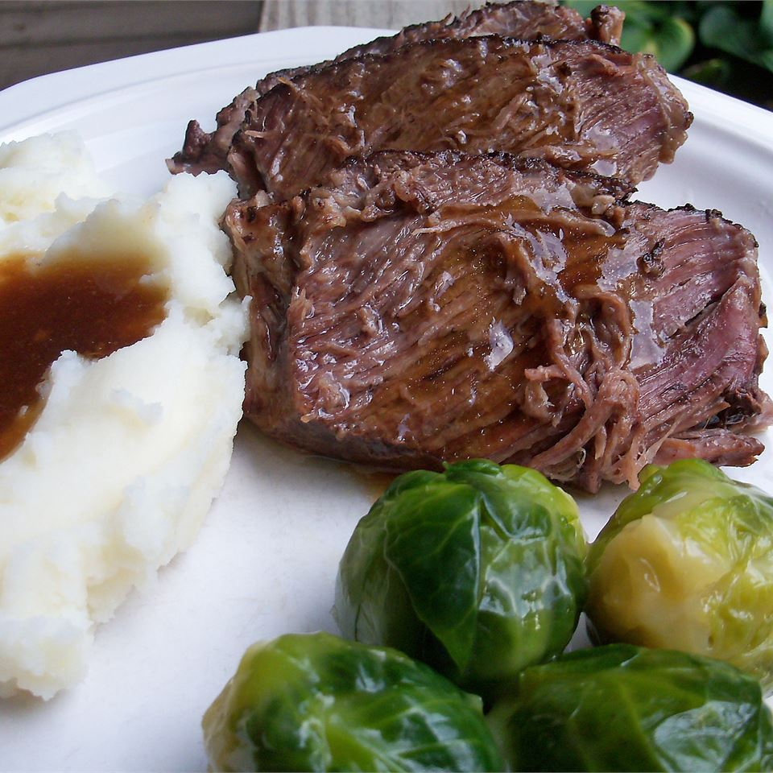

Roast Beef

Description
Excellent roast beef with plenty of juices which can be thickened for gravy.
Ingredients
- ⅓ cup soy sauce
- 1 (1 ounce) package dry onion soup mix
- 3 pounds beef chuck roast
- 2 teaspoons freshly ground black pepper
Steps
- Pour soy sauce and dry onion soup mix into the slow cooker; mix well. Place chuck roast into the slow cooker. Add water until the top 1/2 inch of the roast is not covered. Sprinkle ground pepper on top.
- Cover and cook on low for 22 hours.